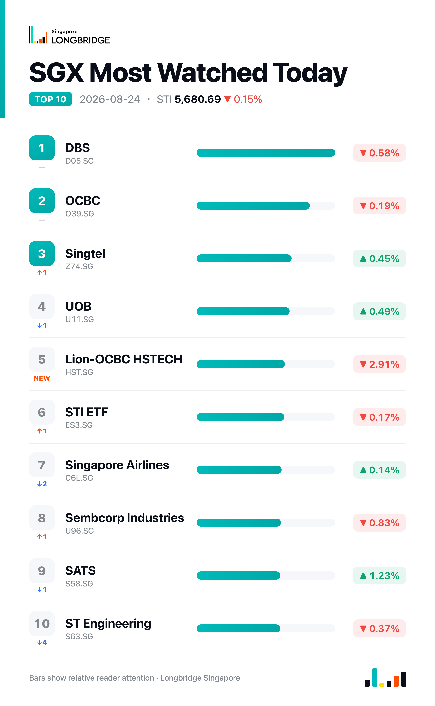

STI Slips 0.15% to 5,680.69 as Early Advance Fades; Seatrium Leads Decline, SATS Snaps Two-Day Slide
The Straits Times Index closed at 5,680.69 on Monday, down 8.27 points, or 0.15%, after an early advance that lifted the benchmark as much as 0.47% to an intraday high of 5,715.47 gave way to a slide through the session to a low of 5,673.71 — briefly erasing the day's entire gain — before a partial recovery into the close. Among the benchmark's 30 constituents, advancers and decliners finished evenly split at 15 apiece, leaving the modest index-level loss driven by a handful of steeper decliners rather than a broad pullback.
The session opened firmer, tracking a similarly stronger start in Hong Kong; the FTSE Straits Times Index itself opened up about 0.3% to 5,705.80, with Singapore's broader market seeing 128 advancers against 76 decliners in early trading, according to Monday's market-open coverage. That early breadth narrowed through the day: the close saw an even 15-15 split among the 30 components, with the steepest losses concentrated in Seatrium (-2.79%), DFI Retail (-1.91%) and Jardine Matheson (-1.12%) — moves large enough, in a handful of names, to tip the cap-weighted index into the red even as gains and losses across the broader basket roughly balanced out.
Session Movers
Wilmar International (F34.SG, +1.35%) was among the session's better performers, having briefly led the broader market's gainers, up as much as 1.89% earlier in the day, according to Monday's market-open coverage. The counter continues to work through its Aug. 14 first-half results — net profit up 2.3% to $779.4 million on a 17.2% revenue rise to $49.36 billion, aided by the consolidation of AWL Agri Business, with Feed & Industrial Products pre-tax profit up 55% and Food Products profit up 56% against a 32% decline at Plantation & Sugar Milling on weak sugar prices — alongside an approved interim dividend of $0.05 per share. The group also disclosed on Aug. 12 the sale of 50% stakes in two China Kellogg joint ventures to Mars Wrigley for $60 million. Shares trade at 12.61 times earnings, cheaper than roughly 54% of the past year, with a consensus Buy rating and a S$3.85 target implying about 2.4% upside.
Seatrium (5E2.SG, -2.79%) was the session's weakest constituent, giving back part of the rally that followed its July 31 first-half results — net profit up 158% to $373 million on a $13.3 billion order book — and the Aug. 4 results-briefing transcript that detailed 5% revenue growth to S$5.6 billion, net leverage of 0.5 times and a further S$32 billion pipeline of prospective LNG-related work, alongside confirmed P-80 and P-82 vessel sailaways for the second half. No fresh company disclosure accompanied Monday's decline, extending a pullback in a stock that has otherwise tracked one of the market's stronger earnings-driven runs this reporting season. Shares trade at 0.991 times book, cheaper than about 86% of the past year, with a consensus Buy rating and a S$2.50 target implying roughly 20% upside.
SATS (S58.SG, +1.23%) rebounded, clawing back an intraday dip — Monday's market-open coverage had flagged it at one point as the session's biggest decliner, down as much as 1.47% — to close higher for the first time since its Aug. 20 slide. That slide followed first-quarter FY2027 results showing net profit up 6% to S$75.1 million and revenue up 11.3% to S$1.68 billion, but an operating margin that fell to 8% under Middle East-related and inflationary cost pressures, which triggered the initial sell-off. No new disclosure accompanied Monday's rebound. The consensus rating remains Strong Buy, with a S$5.12 target implying roughly 24% upside from current levels.
UOB (U11.SG, +0.49%) edged higher, moving opposite to DBS (-0.58%) and OCBC (-0.19%) as the three local banks split again Monday after rising together on Friday. The market continues to digest the Aug. 21 disclosure that CapitaLand Investment and Malaysia's IOI Group plan to jointly acquire Raffles One, a landmark Singapore office tower held by OUE REIT and UOB, for just under S$2.4 billion — a potential monetisation event for UOB's stake. UOB also priced £1 billion of floating-rate covered bonds due February 2030 on Aug. 19, a funding rather than an earnings catalyst. Shares trade at 1.35 times book, above their fair-value range and cheaper than only about 10% of the past five years, with a consensus Hold rating and a S$42.78 target implying about 5% upside.

One point worth noting
Monday's index-level loss masked a market that, by breadth, was almost perfectly balanced: 15 of the 30 STI constituents advanced against 15 that declined, yet the benchmark still slipped 0.15% into the close. The gap is explained by where the losses landed — Seatrium's 2.79% drop, DFI Retail's 1.91% slide and Jardine Matheson's 1.12% decline were among the session's steepest moves in either direction, outweighing a broader set of gains that were mostly modest, with Wilmar's 1.35% the largest advance in the basket. The three local banks also broke from Friday's synchronized advance, splitting again Monday — DBS down 0.58% and OCBC down 0.19% against UOB's 0.49% gain — continuing an alternating pattern that has recurred through the month.
This recap is for informational purposes only and does not constitute investment advice.